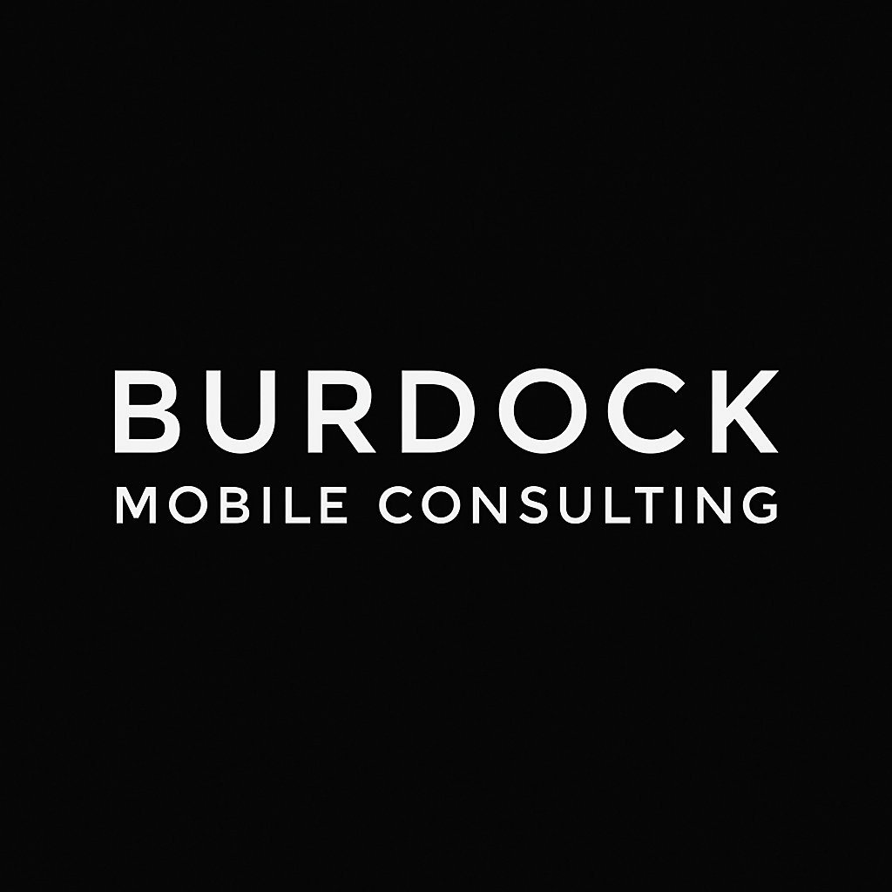
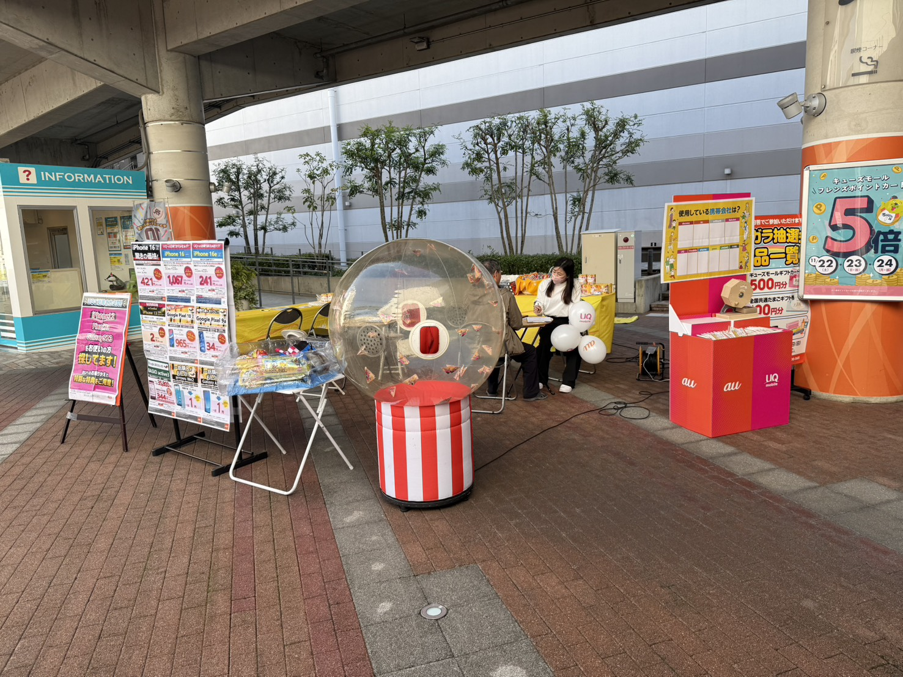
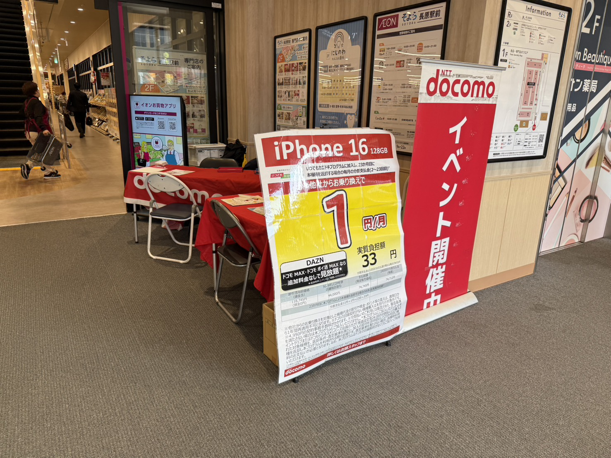

Burdock Mobile Consulting は、中小企業・店舗・イベント主催者さま向けに、
スマホ・通信費の最適化コンサルティングと、シンプルで伝わりやすいホームページ制作を行っています。
法人スマホの見直しから、イベント通信、ホームページ制作まで。
「伝わる」と「つながる」を中心に、実務に直結するサポートを行います。
・スマホ/タブレット/回線の契約状況を整理
・最適なキャリア/プラン/台数のご提案
・複数キャリアを組み合わせた構成にも対応
「毎月の通信費をきちんと把握したい」「無駄をなくしたい」という企業さま向けのサービスです。
・業務を止めずスムーズに移行できる導線設計
・オンライン/店舗手続きのサポート
・比較資料・料金シミュレーションの作成
大量台数の入替や、複雑なプラン変更もまとめてご相談いただけます。
・屋外/屋内イベントの通信環境のプランニング
・決済端末用の回線・Wi-Fi構成の整理
・短期SIM・端末選定のアドバイス
携帯キャリアのイベント現場で培った経験をもとに、実務目線でご提案します。
・1〜数ページ程度のシンプルな公式サイト制作
・事業内容・料金・お問い合わせ導線の整理
・スマホ対応・基本的なSEO設定
「まずは名刺代わりのホームページが欲しい」という店舗・事業者さま向けのプランです。
携帯キャリアのイベント現場での豊富な経験をもとに、
“現場で起こりがちな通信トラブル” まで理解した上でサポートを提供します。

商業施設・駅前スペースなど屋外環境でのブース設営・案内・通信サポートを担当。
風・湿度・電波強度など、屋外特有の課題にも対応してきました。

ショッピングモール内での案内・接客・端末相談を担当。
土日祝の混雑時でもスムーズに案内できるよう、動線設計やオペレーション構築も含めて対応してきました。
内容・台数・企業規模に応じてお見積りいたします。
0円（30〜45分）
通信費やホームページに関するお悩みをヒアリングし、改善の方向性をお伝えします。
50,000円〜
契約状況を整理し、レポート形式で最適案をご提示します。
30,000円〜
屋外/屋内イベントの通信環境構築をサポートします。
80,000円〜
1〜5ページ程度のシンプルな公式サイト制作。
テキスト・写真をご提供いただき、構成〜デザイン〜公開まで対応します。
岸本 杏人（きしもと きょう）
関西を拠点に携帯販売・通信イベントの現場で多数の案件を担当。
“現場でしか分からない課題” を理解した上で、企業の通信環境を改善するサポートを提供しています。
スマホのプラン選定、通信費削減、イベント通信設計、ホームページ制作など幅広く対応。
専門用語を使いすぎず、誰にでも分かる説明を大切にしています。
※本ホームページは、Burdock Mobile Consulting にて自社制作・運用を行っています。
同程度の規模・構成のホームページ制作も承っておりますので、詳細はお気軽にお問い合わせください。